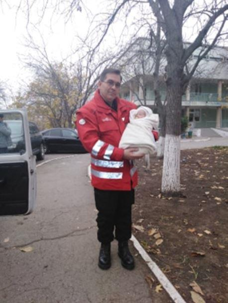
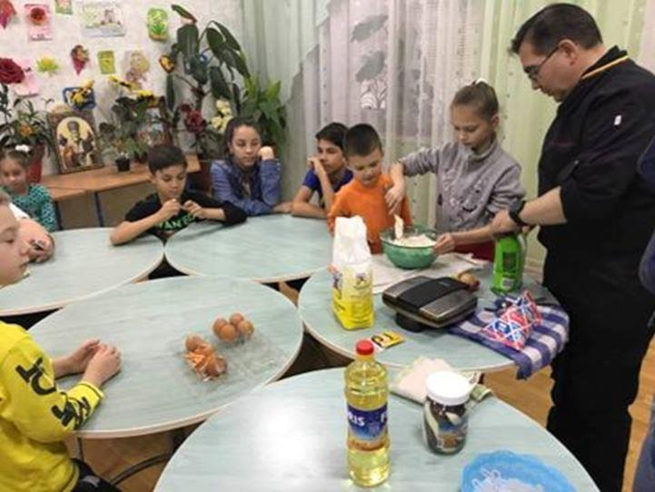
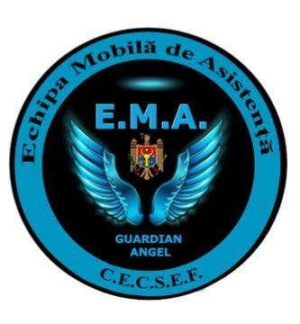
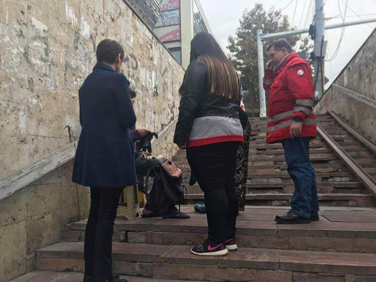
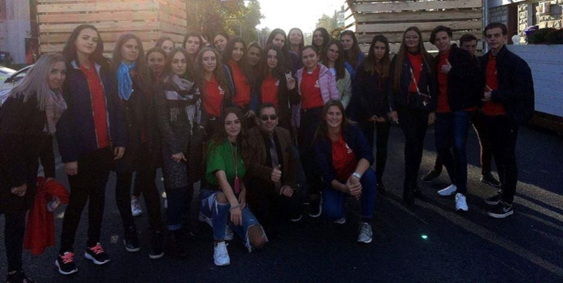
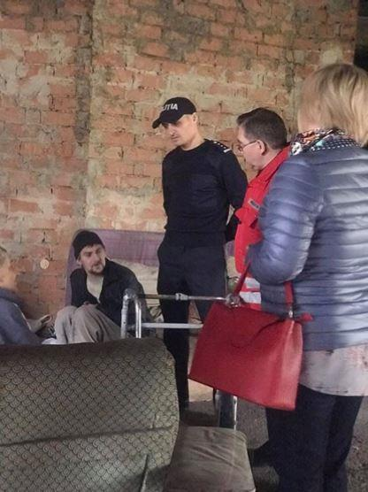

Avec l’effondrement de l’Union soviétique, la Moldavie a accédé à l’indépendance en 1991. Autrefois une région prospère, c’est aujourd’hui le pays le plus pauvre d’Europe.
 Recueil d’un bébé de deux jours retrouvé abandonné dans la rueNotre ami belge Luc François, directeur de l’Académie royale de Protocole et de l’Institution CECSEF en Moldavie, infatigable promoteur de la langue française, a développé une structure sociale dédiée aux victimes de l’exclusion dans les rues de Moldavie. La mission principale de cette structure est orientée vers les jeunes enfants sans domicile fixe mais elle apporte aussi son soutien à de nombreux adultes.
François Maurice : Comment ces enfants se retrouvent-ils livrés à eux-mêmes ?
Luc François : La situation économique du pays oblige d’innombrables parents à chercher du travail à l’étranger. Parfois, les couples mariés trouvent de l’embauche dans deux pays différents. Ainsi, rien que dans le district de Calarasi, il y a 920 enfants dont un parent est à l’étranger et 530 – dont les deux parents sont partis, selon les données du département Assistance sociale de ce district. D’autres cherchent à noyer leur désolation dans l’alcool. Les enfants se retrouvent livrés à eux-mêmes ou sont pris en charge par des grands-parents déjà dépassés. Beaucoup finissent dans la rue en mauvaise compagnie, dans des dépendances ou dans la criminalité. Car, dans la rue, les repères et codes fondamentaux se déconstruisent, d’autres codes les remplacent, engendrant un processus de désocialisation et, la plupart du temps, de déscolarisation.
F.M. : Qui se préoccupe d’eux ?
L. F. : Le nombre d’enfants qui grandissent en en Moldavie dans un environnement problématique ne cesse d’augmenter régulièrement. La responsabilité pour les enfants sans surveillance parentale (soit, les enfants en difficulté ou en situation de risque) est „partagée”, en fonction des problèmes auxquels le jeune membre de la société est confronté, entre les ministères de la Protection Sociale, de l’Education, de l’Intérieur, de la Santé et la Maison Nationale pour les Assurances Sociales. Mais le gouvernement et l’économie sont fortement affectés par les grandes fluctuations des rentrées d’argent et l’émigration. Cela rend difficile pour le gouvernement de mener des programmes sociaux en continu. Au niveau local, les enseignants, les médecins et d’autres spécialistes, aux côtés des assistants sociaux et des autorités locales, sont responsables de ces enfants mais là encore les moyens sont bien inférieurs aux besoins. D’où la création de notre organisation humanitaire…

Cours de cuisine donnés aux enfants des rues
F.M. : N’y-a-t-il pas moyen de faire pression sur les parents avant qu’ils ne migrent ?
L. F. : Une ordonnance a été émise par le Gouvernement qui oblige les migrants qui disposent d’un contrat légal de travail à l’étranger de présenter à la frontière un document confirmant le fait que leurs enfants sont mis sous tutelle. Cependant, selon les informations des organes territoriaux d’assistance sociale, ces cas sont rarissimes. Or, la plupart de Moldaves partent à l’étranger illégalement. Alors, comment les obliger à prendre soin de leurs propres enfants ?
F.M. : Pour répondre à cette détresse, quelles sont les missions des Équipes Mobiles d'Assistance (EMA), dont vous êtes fondateur ?
L. F. : L’urgence est une méthode pour sortir de l’urgence.
Elle se base sur les principes suivants :
L’urgence : identifier l’urgence non seulement médicale, mais médico-psychosociale ;
La permanence : être joignable de jour comme de nuit, lorsqu’aucun service n’est présent ;
La mobilité : aller vers les populations exclues, dans la rue, sur leur lieu de vie ;
Le professionnalisme : s’appuyer sur des équipes formées à cette méthode spécifique ;
La méthode.
Pour ce faire, les EMA parcourent les rues nuit et jour pour aller à la rencontre des personnes les plus exclues sur leurs territoires où elles prodiguent des soins médicaux-psycho-sociaux adaptés aux besoins des personnes rencontrées.
F.M. : Quelles actions avez-vous déjà pu mettre en œuvre ?
L. F. : Nous avons déjà créé des liens avec les Centres d’accueil de jour, centres de soins, centres d’hébergement, ils relaient l’action des équipes mobiles d’aide et fournissent aux personnes accueillies un accompagnement adapté à leur situation spécifique.

F.M. : L’EMA a-t-elle les moyens de subvenir toutes ces missions ?
L. F. : Malheureusement pas totalement aujourd’hui, malgré l’engagement remarquable de tous les volontaires qui composent l’Équipe.
Nous avons besoin de véhicules d'urgences, d'équipements pour nos volontaires (vestes, trousses médicales de premières urgences, téléphones et mise en place d'une application. Le tout avec un centre d'appel permanent.
Par ailleurs, nous avons aussi besoin d'infrastructure pour créer un dépôt social style EMMAÜS et réhabiliter les jeunes et moins jeunes par une éducation pratique aux métiers du bois, de l’électricité mais également aux métiers de la restauration.

Le Président du CECSEF entouré des nombreux jeunes bénévoles constituant les Équipes mobiles d’Assistance
F.M. : Au-delà des interventions d’urgence, vous souhaitez donc mettre en place des actions d’insertions sociales et professionnelles… Bravo pour toutes ces belles actions Monsieur François. Nous espérons que les lecteurs de Méthode seront sensibles à votre organisation et souhaiteront apporter leur contribution par la cagnotte « gofundme », que vous avez initiée ou par virement sur le compte du CECSEF, que vous présidez.
Partager cette page